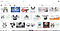

Then Panda blew these big websites

Content creation back in 2011 was mainly about the volume of content and linking rather than quality. The Pagerank algorithm was judging content by how many links point to it and what was the authority of those links. If a website about book publishing was getting 10 links from websites about book writing and another website about book publishing was getting 100 but those links were coming from websites about different themes and topics, the website with 10 links would rank first.
Understanding this fact, some content marketing built an entire business around, creating farms of websites and blogging networks just for the sake of creating poor keyword-driven content that was just intended to link to their main web properties. This had the bad consequence of obscuring independent content writers who had not enough money to scale by hiring cheap writers to write massive content that was often poor and filled with keywords.
These publishers that were building content at scale had just a marketing goal which was to get more revenues with advertising rather than delivering value and information to internet users.
Aware of the situation and having a clear goal which is to guide people to the most valuable information google’s team of engineers worked to update the PageRank algorithm and rolled out Panda in February 2011.
Pandas as a Major update of Google Algorithm changed clearly the dynamics of online content publishing and big websites started dying by getting fewer and fewer visits due to their rankings that were devalued by Pandas the new Google ranking algorithm.
Website like
· AssociatedContent.com.
· Suite101.com
· Encyclopedia.com
· HowToDoThings.com
· Answers.com
· eHow.com
ran almost out of business. I will make a single case study for each of those web properties that got millions of visits cut in just a few days.
To tell you that a Google ranking algorithm can kill your online activity if don't follows the guidelines which are always clearly published by google for all participant to follow.
An update is coming and the guidelines and recommended practices are there for everybody to follow. For sure it always requires technical skills to meet the specifications of the updates but if you do ask an expert like us, you can get help.
This is just another article about the online content publishing business and how Ranking algorithm changes affect the leadership of this market. I will make many more other articles about this topic for you to better understand the importance and to take action before it becomes too late.
